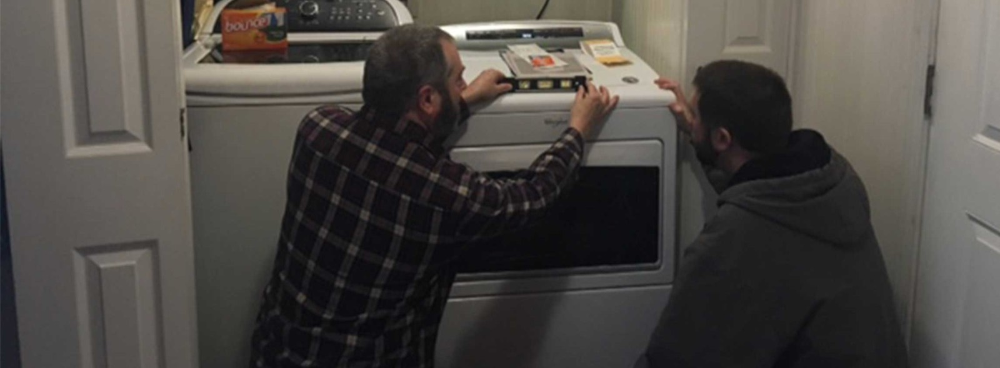
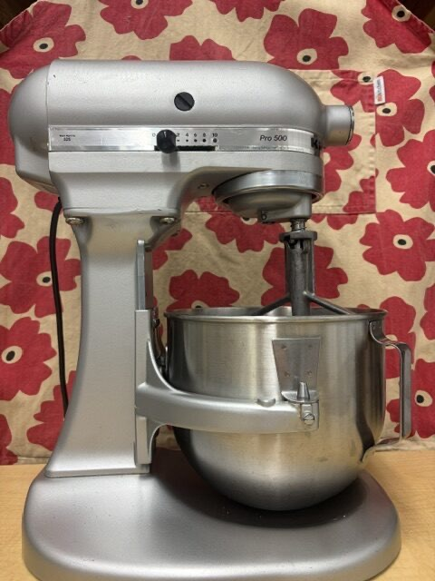
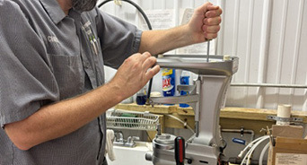
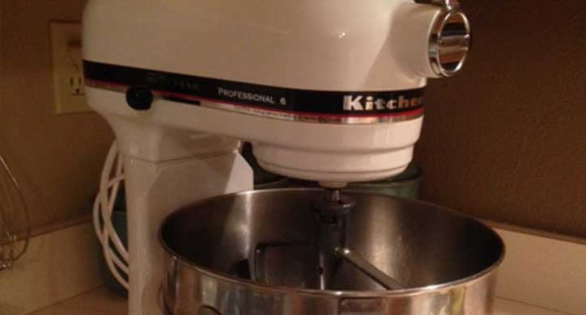
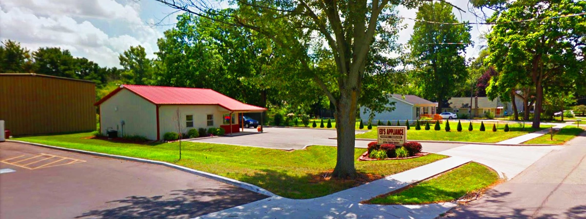
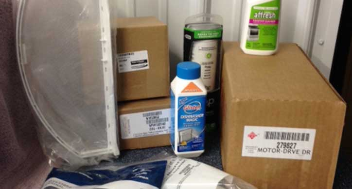

Refrigerators
Repair and maintenance, in your kitchen.
Elkhart, Indiana · Family-owned · Since 1946
Refrigerators, washers, dryers, dishwashers, ranges and more, repaired where they stand. We give you a specific arrival time, so you are not stuck waiting all day.
Mon–Fri · 8 AM – 4 PM

On a service callBy the numbers
Ed’s has repaired household appliances for Elkhart families since 1946 and has helped thousands of customers along the way. Over the years the business specialized in repair, because that is what the area needed most.
The Shaffer Avenue store has closed. Ed’s now works as a service-only business: we still repair your appliances in your home, just as we have since 1946, and we still order every part your repair needs. Walk-in parts sales have ended. Our phone number has not changed.
574-293-2631How it works
Ed’s comes directly to your home for every repair and orders any part your appliance requires.
Call 574-293-2631 Monday to Friday, 8 AM to 4 PM, or send the form below. Tami can answer questions about your appliance and book the visit.
Service calls run between 8 AM and 4 PM. We give you a specific arrival time, so you are not stuck at home waiting all day.
The repair happens in your home. If a part is not on hand, we order it, even hard-to-find pieces, and most arrive within 1–2 business days.
What we fix
Repair and maintenance for the kitchen and the laundry room, on most major brands. See the full service list and brands.
Repair and maintenance, in your kitchen.
Freezers and ice machines kept running.
Repair and maintenance for dishwashers.
Washing machine repair at home.
Dryer repair in your laundry room.
Ovens, ranges and stovetops.
Microwaves, vent hoods and trash compactors.
Stand mixer service with pickup or drop-off.



Still on the bench
We continue to service KitchenAid stand mixers. With no storefront for drop-offs, just call and we will arrange a pickup or a convenient drop-off location that works for you.
Arrange a pickupMeet the team
A family-owned business that has built its reputation on honest work and timely service.
With Ed’s since 1993. Tami answers your questions about your appliance and schedules a technician to come to your home. Before Ed’s she spent more than 12 years in management at Middlebury Family Physicians.
Years of experience on all major brands. Two years in Purdue University’s Electrical Engineering Technology program, plus brand training on Bosch, LG, Whirlpool, Maytag and Fisher & Paykel.
Terry Martin joined Ed’s in 1986 and spent four decades taking care of appliances and customers throughout Elkhart County. Enjoy your retirement!
Our goal
Our goal is to take care of people’s service and repair needs in a quality, cost-effective and professional way, and to help appliances last longer.

FAQ
Anything else? Call 574-293-2631 during business hours.

Yes. Ed’s is a service-only business and repairs household appliances right in your home, in Elkhart, IN and the surrounding area.
No. Walk-in parts sales ended when the Shaffer Avenue store closed. We still order every part your repair needs, including hard-to-find items, and can get most parts within 1 to 2 business days.
Yes. Call 574-293-2631 and we will arrange a pickup or a convenient drop-off location.
Between 8 AM and 4 PM, Monday through Friday. You get a specific arrival time, so you are not stuck waiting all day.
Most major brands, including Whirlpool, Maytag, KitchenAid, GE-Hotpoint, Frigidaire, Bosch, LG, Fisher & Paykel, Kenmore, Amana, Jenn-Air, Speed Queen and more. See the full list.
No. It is still 574-293-2631.
Contact